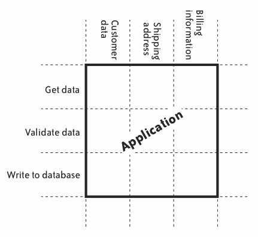

1日1エントリにもがく中で見えてきたXPの「フィードバック」の価値
1日1エントリにもがく中で見えてきたXPの「フィードバック」の価値
- Event:
XP祭り2024
- Presented:
2024/09/28 nikkie
お前、誰よ（自己紹介）
nikkie ／ @ftnext
機械学習エンジニア・自然言語処理・XP（We're hiring!）
Pythonをよく書く。小さなOSS開発（代表作 sphinx-new-tab-link）
毎日ブログを書いてます
連続 680日 突破
豊富なストックがあるわけではなく、自転車操業🚵♀️（＝もがき）
1日1エントリ
毎日テックブログ ではありません
技術記事もそうでない記事（趣味・暮らし向き）も書いています
割合としては技術記事の方が多いはず（7〜8割？）
1日1エントリの雰囲気
感情の動き（例：仕事や趣味開発でハマっていた事象が解決できた！）
⚠️注意事項
1日1エントリをオススメする気は ありません （超きついよ）
ブログを継続するコツは（XPとは関係ないと思っているので）お伝えしません
XPの価値
コミュニケーション
シンプリシティ
フィードバック
勇気
リスペクト
価値、原則、プラクティス
見えてきたXPの「フィードバック」の価値
フィードバックサイクルをいかに高速に回すか
仕事で機械学習をする中で意識する
機械学習プロジェクトにおけるフィードバックサイクル？
機械学習で提供する価値を高めたい（例：性能のより高い機械学習モデル）
性能のよいモデルの作り方は あらかじめ分からない （案を試して、性能向上 or 効果なし）
先が見通せない状況 でフィードバックを得て進む、とは？？
お話しするのは、2トピック
ベイビーステップ（原則）
イテレーティブ
ベイビーステップ
大きな変更は、大きなステップでやりたくなるものである。
『エクストリームプログラミング（第2版）』 5.13 書き出し
ブログ執筆に当てはめると
大きな記事は、大きなステップで書きたくなるものである（nikkie）
大きな記事を書くぞ！
ヒット（バズ）を狙って、大著な1記事💪
あれもこれも盛り込んでいく
IMO 1万字超えると私にはしんどい
再び『エクストリームプログラミング（第2版）』
大きな変更が失敗してチームがムダに後退するよりも、小さなステップのオーバーヘッドの方が小さい。
ベイビーステップ（5.13）
毎日 の強制力で1つ1つの記事は小さくなった
小さな記事のオーバーヘッドを受け容れた結果に
小さな記事という考え方
計画の考え方（頻繁にリリースする）との関連
一度に1つのプロジェクト
『アート・オブ・アジャイル デベロップメント』8.2.1 図の出典
一度に1つのプロジェクト
マルチタスク（図のシナリオA）をしない
一度に1つだけのプロジェクト（図のシナリオB）で進めたほうが、届く価値（＝対価）は大きい
早期にリリース、頻繁にリリース
『アート・オブ・アジャイル デベロップメント』8.2.2 図の出典
早期にリリース、頻繁にリリース
全部完成すると毎月 5 の価値が届くとする
シナリオAは6ヶ月目に一度だけリリースして、7ヶ月目に5の価値を届ける（＝対価を得る）
シナリオBは 3の価値で3ヶ月目にリリース。届けている価値の総量はAより多い
頻繁にリリースするために
機能を小さく する
1日1エントリで記事が小さくなった経験から、わかりみが深い（Shoreさん、天才！）
IMO 小さいは正義！
『継続的デリバリー』より
ソフトウェアの世界では、何か痛みを伴うものがあった場合にその痛みを軽減する方法は、もっとこまめに行うことだけだ。(Kindle版 p.62)
小さくするテクニック： 縦スライス
from ユーザストーリーの考え方
縦スライスと横スライス
『アート・オブ・アジャイル デベロップメント』8.2.6 図の出典
横スライス（horizontal）の例
James Shoreさん作成の図をnikkieが加工
横スライス（horizontal）の例
データ取得のストーリー
データ検証のストーリー
データベースへ書き込むストーリー
横スライス的な記事分割
Part 1, 2, ... のように分かれる
Part 1だけでは不完全。2は1がないと読めない
横スライスのストーリー（Shoreさん曰く）
簡単に作れる
しかし、計画の柔軟性をなくす（3つで1つの大きな 塊）
そこで 縦 スライス！（vertical）
James Shoreさん作成の図をnikkieが加工
縦スライスの例
特定のデータ について、取得・検証・DB書き込みできる
顧客データ
送付先住所
請求情報
縦スライスのストーリー（Shoreさん曰く）
各ストーリーは 小さい価値を届けきって いる（途中で全く別の開発に移ってもよい）
＝計画は柔軟性を得られる
縦スライスできるようになるには、練習が必要
縦スライス的な記事分割
あるツールの 特定の用途 についてアウトプット
1記事ですべての機能を網羅しない
書いていてインストールだけでも難しいと分かったら、インストールの記事と用途記事（インストール記事を内包）に分けた
縦スライスの恩恵
nikkieは 超気分屋。続きが書けないことが多い
「昨日書いてた続きよりも、今日はこのネタが書きたいんじゃ〜！！」
縦スライスなら、後続記事を書かなくてもよい（横スライスは後続記事がマスト）
まとめ🥟 ベイビーステップ
1日1エントリを継続する中で 小さな記事 に至った
小さくすることで頻繁にリリースにつながる
小さくするときは縦スライスにして、気分屋でも継続しやすく
イテレーティブ
iterative = 反復
機械学習プロジェクトをベイビーステップでやっていくぞ！
雑に言うと、機械学習は データ から モデル を作る
開発範囲：データまわりの自動化、モデルまわりの自動化
開発すべきことは 全部やらねば とも思っていた（私は完璧主義）
小さく進みたいけれど
データもモデルもやろうとすると、 大きく なってしまう
大きくなると、うまくいかなかった場合の手戻りは大きい
どう両立させる？
「常に次回がある」という考え方
『アート・オブ・アジャイル デベロップメント』はふりかえりのトピックを コイン投げ で決める
『アート・オブ・アジャイル デベロップメント』5.5.6
（※1つのカテゴリに人気が集中していなくても）、時間をかけすぎてはいけない。コインか何かを投げて 1 つのカテゴリを選ぼう。
Shoreさん、コイン投げで決めていいんですか？
来週もふりかえりをするんだ。重要な問題であれば、また出てくるだろう。(p.101)
トピックを話す方に時間を使う考え方、なるほどな〜
ブログでも「常に次回がある」
＝1日1エントリ
趣味や暮らし向きを書くことへの抵抗感が薄れた
100%のものを毎回目指すが、 更新する次回 も常にある
内容への指摘は 追加の次回
指摘やコメントはありがたい
記事自体はリリース済み（リリースが否定されるわけではない）
追記して修正（パッチ） or 対応する記事執筆（追加ストーリー）
機械学習プロジェクトでも
小さく進むことを優先するために、 次がある と考えられることに気づいた
「一息にやらない完璧主義」（？）
次を前提に、今は最小限を
どうしてもいま必要な部分だけをやる
例：モデルまわりだけまず自動化し、モデルに必要なデータは最初は手動で用意（次に自動化する）
小さく進むのを 何度も繰り返し たら、やるべきことが全部できている状態で進む
まとめ🥟 イテレーティブ
小さく進むのを繰り返す中で、次回がある ことに気づいた
小さく進み続ける中で、少しずつシステムを作り上げていく
手戻るかもしれないので、一度に全部を作りきらない
まとめ🌯 1日1エントリにもがく中で見えてきたXPの「フィードバック」の価値
ベイビーステップ：小さいがゆえの高頻度
イテレーティブ：繰り返す中で（少しずつ）近づく
1日1エントリ
毎日（＝高頻度）リリースする中で記事は 小さく なった
「常に次回 がある」ことを認識した（そのネタ、本当に全部書く？）
フィードバックサイクルをいかに高速に回すか、とは
性能のよいモデルの作り方は あらかじめ分からない からこそ
一歩一歩は小さく して、進んでいる方向を確認しながら
繰り返し小さく進み続ける中で機械学習システムが徐々に 作り上げられていく
小さく区切って絶えずやる （nikkie）
ベイビーステップ（小さく・頻度高く）
かつ、イテレーティブ（何度も反復）
NEXT? 小さな記事を つなげる
カンファレンス登壇へ活かす道を模索中
試行錯誤中：小さな技術記事をつなげて、30分（程度）の発表を構成
ご清聴ありがとうございました
余談『小さな習慣』
毎日たった1回の腕立て伏せ
小さすぎて失敗しないので継続しやすい
1回やると調子が出てきて超過達成できる